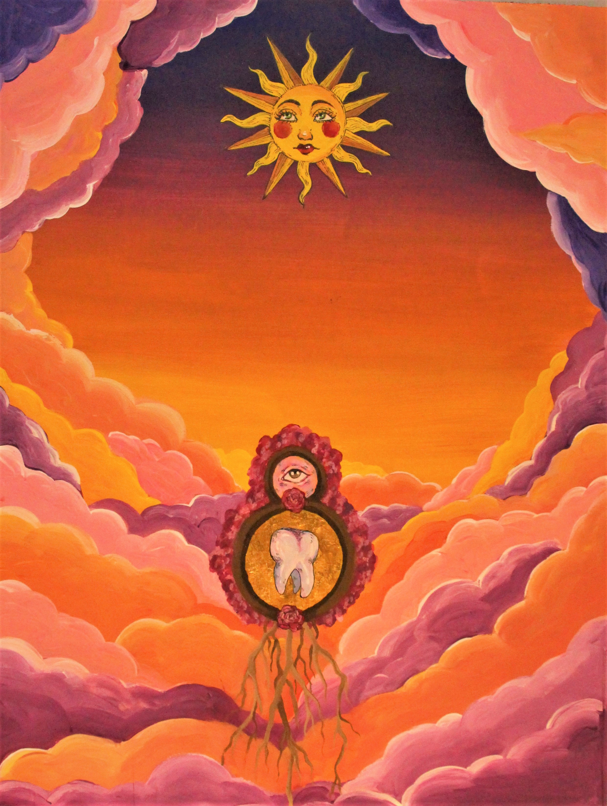

Astrid Rousselin

credit: Nicolas Delivre
Je suis née en France et j ´ai vécu toute mon enfance dans les alentours de Lyon.
A l ´université j ´ai tout d ´abord étudié dans une école de commerce franco-américaine.
Pendant 4 ans j´ai partagée mon temps entre la France et les Etats-Unis avant d´obtenir mon BBA.
J ´ai aussi pu faire de nombreux stages à l´étranger, dont notamment un stage de 9 mois à Tokyo, Japon, dans une entreprise de recrutement.
Je me suis établie à montréal ces deux dernières années et espère pouvoir rester dans ce magnifique pays qu´est le canada.
J ´ai voulu poursuivre mes études tout d´abord à Concordia en Journalisme et plus récemment en D.E.S.S. à l´UdeM.
J ´aimerais poursuivre ma carrière dans le journalisme, notamment pour devenir documentariste nature.
Je suis passionnée de plongée depuis des années.
J ´ai commencée lorsque j ´avais 12 ans et n ´ai pas arr êté depuis.
Dernièrement j ´ai même passé mon Divemaster en Tanzanie. J ´ai profitée de cette formation finale pour planter du corail dans les récifs coralliens autour de l ´ile de Zanzibar et accompagner une ONG dans une étude de biologie marine sur les cétacés de la région.
Pour ceux que ça intéresse j ´aime aussi faire de la photo, et je peins durant mon temps libre.
Mes livres préférés tournent autour de la science-fiction et de l ´Heroic-Fantasy. (Je prends régulièrement des recommandations, n ´hésitez pas !).
J ´aime aussi occuper mon temps gr âce aux jeux vidéo et occasionnellement je binge-watch des séries sur Netflix.

Novembre 2020 - Visiteur lors d'une Urbex.
Photo: Astrid Rousselin

Mars 2020 - Shot Macro.
Photo: Astrid Rousselin

Février 2020 - Écureuil du jardin.
Photo: Astrid Rousselin
Reflexion sur une œuvre
Concernant l´œuvre web que j´ai choisi de partagé, il s´agit d´un compte twitter gérer par un robot : @mothgenerator, crée en 2015 par Loren Schmidt et Katie Rose Pipkin.
Ce générateur de papillons de nuit (ou moth en anglais), crée de toute pièce des magnifique papillons imaginaires de toutes les formes,
tailles et couleurs. Chacun arrive avec un nom fantastique et faussement scientifique dérivée de milliers de noms de papillons anglais et latins.
Comme par exemple la sublime ash-fishia moth - unduleporina comorpha.
Pour introduire plus de fun, ses créateurs, ont également programmé le générateur pour interagir avec n´importe quel utilisateur sur Twitter:
si vous tweetez un mot aléatoire ou même une phrase sur le compte, vous recevrez une mention avec votre propre papillon personnalisé.

https://twitter.com/mothgenerator